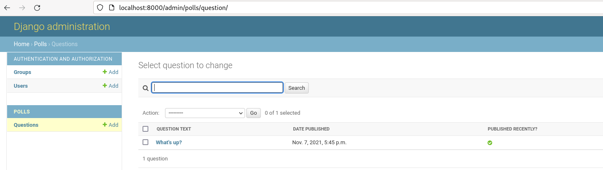
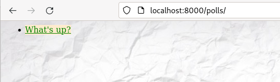

Introducción a django
Django es un framework de desarrollo web de código abierto, escrito en Python, que respeta el patrón de diseño conocido como modelo–vista–controlador (MVC).
El modelo MVC es un patrón de diseño software que separa los datos de la aplicación, la lógica del programa y la representación de la información:
- El Modelo: Es la representación de la información con la cual el sistema opera, por lo tanto gestiona todos los accesos a dicha información.
- El Controlador: Es la parte del programa donde se implementa la lógica y las funciones de la aplicación.
- La Vista: Representa la información ofrecida por la aplicación en un formato adecuada.
Instalación de django
Como siempre cuando trabajamos en Python vamos a usar un entorno virtual:
$ python3 -m venv django
$ source django/bin/activate
(django)$ pip install django
(django)$ python -m django --version
4.1.3
Creando un proyecto django
En un primer paso, vamos a ver cómo sería la creación de una aplicación django, posteriormente trabajaremos con una aplicación ya desarrollada. Si vamos a crear una aplicación django lo primero sería la creación de un proyecto:
(django)$ django-admin startproject mysite
Esto crearía el directorio del proyecto mysite que tendría los siguientes ficheros:
mysite/
manage.py
mysite/
__init__.py
settings.py
urls.py
asgi.py
wsgi.py
manage.py: La utilidad de terminal que vamos a usar para manejar nuestra aplicación.- El directorio
mysitees un paquete python (agrupa distintos módulos (ficheros python)). Esto se indica con un fichero vacio que se de be llamar__init__.py. settings.py: La configuración de la aplicación.urls.py: Donde se declaran las rutas que va tener la aplicación.wsgi.py: Fichero wsgi para el despliegue de la aplicación utilizando el protocolo wsgi.asgi.py: Fichero asgi para el despliegue de la aplicación utilizando el protocolo asgi.
Ejecución del servidor web de desarrollo
Si queremos iniciar el servidor web de desarrollo para ver cómo va quedando la aplicación, ejecutamos:
(django)$ python3 manage.py runserver
Si queremos que el servidor escuche en todas las direcciones y en un puerto determinado:
(django)$ python3 manage.py runserver 0.0.0.0:8000
Creando una aplicación
Hasta ahora tenemos un proyecto django, pero no tiene ninguna funcionalidad. En un proyecto django podemos ir añadiendo distintas aplicaciones donde vamos implementando las distintas funcionalidades del programa. Siguiendo el tutorial de django, vamos a crear la aplicación polls (encuestas), para ello:
(django)$ python3 manage.py startapp polls
Esto creará un directorio polls en el proyecto con los siguientes ficheros:
polls/
__init__.py
admin.py
apps.py
migrations/
__init__.py
models.py
tests.py
views.py
Ahora iremos estudiando cada uno de estos ficheros. Es muy recomendable que hagáis el tutorial de django que os da una visión general del desarrollo de aplicaciones web en django.
En el siguiente apartado seguiremos estudiando las aplicaciones django pero utilizando la aplicación desarrollada en el tutorial, que podéis encontrar en: https://github.com/josedom24/django_tutorial.
La configuración del proyecto
Veamos el ficheros settings.py que encontramos dentro del directorio django_tutorial:
DEBUG = True: Si está activo los errores que se produzcan en la aplicación se verán con todo lujo de detalles en el navegador. Si tenemos la aplicación en producción debería serFalse.ALLOWED_HOSTS = []: Una lista con los nombres con los que se va a permitir el acceso a la aplicación.INSTALLED_APPS = [...: La lista de las aplicaciones que tiene instalada el proyecto, por ejemplo vemos que se ha incluido la aplicación polls (polls.apps.PollsConfig). También tenemos una aplicación que nos permite tener un panel de control de la aplicación (django.contrib.admin). Y otras cuantas aplicaciones…DATABASES: Configuración de la base de datos que se va a utilizar en el proyecto. Por defecto se utiliza una base de datos sqlite llamadadb.sqlite3.
El modelo de la aplicación
El modelo nos permite diseñar las tablas y las relaciones con la que vamos a trabajar en nuestra aplicación. El modelo de django nos independiza del motos de base de datos, es decir, vamos a trabajar con clases y objetos que representan los datos y nos da igual que los datos se guarden en cualquier tipo de base de datos.
El modelo de la aplicación polls se define en el fichero polls/models.py:
import datetime
from django.db import models
from django.utils import timezone
class Question(models.Model):
question_text = models.CharField(max_length=200)
pub_date = models.DateTimeField('date published')
def __str__(self):
return self.question_text
def was_published_recently(self):
now = timezone.now()
return now - datetime.timedelta(days=1) <= self.pub_date <= now
was_published_recently.admin_order_field = 'pub_date'
was_published_recently.boolean = True
was_published_recently.short_description = 'Published recently?'
class Choice(models.Model):
question = models.ForeignKey(Question, on_delete=models.CASCADE)
choice_text = models.CharField(max_length=200)
votes = models.IntegerField(default=0)
def __str__(self):
return self.choice_text
Como vemos creamos dos clases:
Questionque va a representar la tabla donde guardamos las preguntas de las encuestas. UnaQuestionva a tener dos atributos el texto (question_text) y la fecha de publicación (pub_date). Además se creará un atributo autoincremental que será la clave primaria.Choice: representa las posibles respuestas de una encuesta. Tiene los siguientes atributos:questionque es una clave ajena para relacionarlo con la tabla anterior,choice_text: texto de la respuesta yvotes: votos de dicha respuesta. También se crea una clave única para esta tabla.
Cada clase representa una tabla y la definición de sus atributos.
¿Qué relación tiene el modelo con la base de datos que hemos configurado en el fichero settings.py?
El programa va a trabajar para gestionar los datos con estas dos clases, pero cada vez que se haga una operación en los datos se traducirá internamente a SQL para que se guarde en la base de datos configurada.
Creación de las tablas
Lo primero que vamos a hacer es crear las tablas definidas en el modelo de la aplicación en la base de datos configurada, para ello ejecutamos:
(django)$ python3 manage.py migrate
Operations to perform:
Apply all migrations: admin, auth, contenttypes, polls, sessions
Running migrations:
Applying contenttypes.0001_initial... OK
Applying auth.0001_initial... OK
Applying admin.0001_initial... OK
Applying admin.0002_logentry_remove_auto_add... OK
Applying admin.0003_logentry_add_action_flag_choices... OK
Applying contenttypes.0002_remove_content_type_name... OK
Applying auth.0002_alter_permission_name_max_length... OK
Applying auth.0003_alter_user_email_max_length... OK
Applying auth.0004_alter_user_username_opts... OK
Applying auth.0005_alter_user_last_login_null... OK
Applying auth.0006_require_contenttypes_0002... OK
Applying auth.0007_alter_validators_add_error_messages... OK
Applying auth.0008_alter_user_username_max_length... OK
Applying auth.0009_alter_user_last_name_max_length... OK
Applying auth.0010_alter_group_name_max_length... OK
Applying auth.0011_update_proxy_permissions... OK
Applying auth.0012_alter_user_first_name_max_length... OK
Applying polls.0001_initial... OK
Applying sessions.0001_initial... OK
Podemos comprobar que cada una de las aplicaciones que forman el proyecto han creado sus tablas:
$ sqlite3 db.sqlite3
...
sqlite> .tables
auth_group django_admin_log
auth_group_permissions django_content_type
auth_permission django_migrations
auth_user django_session
auth_user_groups polls_choice
auth_user_user_permissions polls_question
Jugando con el modelo
Vamos a poner un ejemplo de como podemos crear una encuesta utilizando las clases, para ello vamos a acceder a una shell de django:
(django)$ python3 manage.py shell
...
>>> from polls.models import Choice, Question
>>> Question.objects.all()
<QuerySet []>
>>> from django.utils import timezone
>>> q = Question(question_text="What's new?", pub_date=timezone.now())
>>> q.save()
>>> q.id
1
>>> q.question_text
"What's new?"
>>> q.pub_date
datetime.datetime(2021, 11, 7, 17, 45, 36, 939817, tzinfo=<UTC>)
>>> q.question_text = "What's up?"
>>> q.save()
>>> Question.objects.all()
<QuerySet [<Question: What's up?>]>
- El primer
q.save()ha hecho un insert sobre la tabla Question. - El segundo
q.save()ha hecho un update sobre la tabla Question. - La instrucción
Question.objects.all()ha ejecutado unselect * from Question.
Pero lo importante: Es que da igual la base de datos que tengamos configurada: una sqlite, mariadb, posgresSQL, oracle, ….
Podemos comprobar que se ha añadido un registro en la tabla Question:
sqlite> select * from polls_question;
1|What's up?|2021-11-07 17:45:36.939817
Modificación del modelo
Si modificamos el modelo, es porque estamos cambiando la estructura de la base de datos. Para que siga funcionando bien la aplicación tendremos que crear una migración:
(django)$ python3 manage.py makemigrations
Esto creara un fichero de migración en el directorio polls/migrations. Una migración es un script que al ejecutarlo se cambia la estructura de la base de datos según el cambio del modelo. Para ejecutar la migración:
(django)$ python3 manage.py migrate
La aplicación de administración de la aplicación
Como hemos visto anteriormente nuestro proyecto tiene una aplicación de administración y una aplicación de autentificación para guardar los usuarios. Para acceder a la zona de administración antes hay que crear al usuario administrador de la aplicación, para ello:
(django)$ python3 manage.py createsuperuser
Podemos comprobar que efectivamente se ha creado un usuario en la tabla correspondiente:
sqlite> select * from auth_user;
1|pbkdf2_sha256$260000$U6iFl8rdYciSxgBRwSlDIT$Mp1pIcSQTurHNW82F3gQ7UgH8G2+goJE0V5EeASg2xE=||1|admin||admin@admin.es|1|1|2021-11-07 18:03:45.427069|
Para acceder a la zona de administración, arrancamos el servidor web de desarrollo, accedemos a la ruta /admin y podemos comprobar que tenemos creado una pregunta:

Las rutas y el controlador de la aplicación
Las rutas virtuales que vamos a usar para acceder a las distintas funciones de la aplicación se definen a nivel de proyecto y a nivel de aplicación:
- A nivel de proyecto estudiamos el fichero
django_tutorial/urls.py:- Donde se ha definido que cuando se acceda a la ruta
polls/se utilizaran las rutas definidas en la aplicaciónpolls. - Y cuando se acceda a la ruta
admin/se utilizarán las rutas definidas en la aplicaciónadmin(panel de administración).
- Donde se ha definido que cuando se acceda a la ruta
- A nivel de aplicación, vemos el fichero
polls/urls.pyy comprobamos que se han definido 4 rutas:- La ruta principal ‘’: Donde se va a ejecutar la función
index, que muestra la lista de encuestas. Ejemplo:http://localhost:8000/polls. - La ruta
<int:pk>/: Cuando se ponga un entero se mostrará información de esa encuesta. Esto se hace en la funcióndetail. Ejemplo:http://localhost:8000/polls/1/. - La ruta
'<int:pk>/results/: Donde se nos mostrará los resultados de la encuesta identificada por su código. Esto se realiza con la funciónresults. Ejemplo:http://localhost:8000/polls/1/results/. - La ruta
<int:question_id>/vote/: Nos permite votar una opción de una encuesta. Esto lo realiza la funciónvote. Por ejemplo:http://localhost:8000/polls/100/vote/.
- La ruta principal ‘’: Donde se va a ejecutar la función
Después lo estudiaremos con más detenimiento, pero las funciones que se realizan en cada una de las rutas forman parte del controlador de la aplicación que están implementadas en el fichero polls/views.py.
Las vistas de la aplicación
Las vistas en djando se implementan usando plantillas (templates). django tiene un motor de plantillas propio. Podemos encontrar las vistas de la aplicación polls en el directorio polls\templates\polls.
Por ejemplo al entrar a la ruta principal de la aplicación polls se nos muestra la siguiente página web:

Desplegando una aplicación django
Hemos visto distintas formas de desplegar aplicaciones flask en los ejercicios de esta unidad. El despliegue de una aplicación django se hace de forma similar, teniendo en cuenta los siguientes aspectos:
- El fichero wsgi, que será el punto de acceso a la aplicación se encuentra en
django_tutorial/django_tutorial/wsgi.py. - Cuando usamos apache2 + mod_wsgi, Django no sirve el contenido estático, por lo que tendremos que configurar el servidor web para que lo haga. Tendremos que usar
aliaspara que el contenido estático sea accesible. Por ejemplo, ¿dónde se encuentra la hoja de estilo de la zona de administración de nuestra aplicación? - Tienes una guia de despliegue de aplicaciones django en: How to deploy with WSGI.